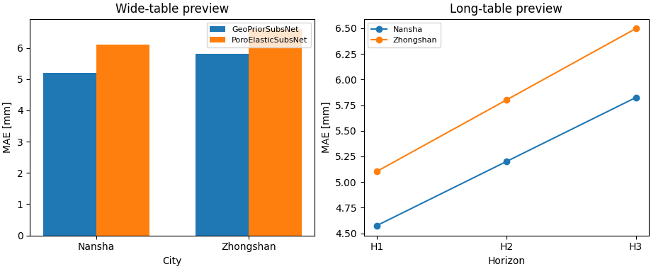

Note
Go to the end to download the full example code.
Build unified model-metrics tables from GeoPrior runs#
This example teaches you how to use GeoPrior’s
build-model-metrics utility.
Unlike the figure-generation scripts, this command is mainly an artifact builder. It scans ablation-record JSONL files across a results tree and turns them into a single unified metrics archive.
Why this matters#
Once you have many runs, you usually need two views:
a wide run-level table for ranking and filtering runs,
a long horizon-level table for forecast-step diagnostics.
This builder produces both from the same source records.
Imports#
We call the production builder, then read its outputs back in and create one compact teaching preview.
from __future__ import annotations
import json
import tempfile
from pathlib import Path
import matplotlib.pyplot as plt
import numpy as np
import pandas as pd
from geoprior._scripts.build_model_metrics import (
build_model_metrics_main,
)
Build a compact synthetic results tree#
The real builder scans a results root for files like:
<run_dir>/ablation_records/ablation_record*.jsonl
For the lesson, we create a small synthetic results tree with:
two cities,
two model families,
per-horizon MAE and R2,
post-hoc interval-calibration metrics,
and one duplicate run stored both as a legacy record and as an updated record.
That lets the page demonstrate three important behaviors:
recursive discovery,
updated-record preference,
long-table generation.
def _interval_block(
*,
cov_uncal: float,
cov_cal: float,
shp_uncal: float,
shp_cal: float,
) -> dict[str, object]:
"""Return a compact interval-calibration payload."""
return {
"target": 0.80,
"coverage80_uncalibrated": float(cov_uncal),
"coverage80_calibrated": float(cov_cal),
"sharpness80_uncalibrated": float(shp_uncal),
"sharpness80_calibrated": float(shp_cal),
"coverage80_uncalibrated_phys": float(
max(0.0, cov_uncal - 0.01)
),
"coverage80_calibrated_phys": float(
max(0.0, cov_cal - 0.01)
),
"sharpness80_uncalibrated_phys": float(
shp_uncal * 1.03
),
"sharpness80_calibrated_phys": float(
shp_cal * 1.02
),
"factors_per_horizon": {
"H1": 1.00,
"H2": 0.96,
"H3": 0.92,
},
"factors_per_horizon_from_cal_stats": {
"eval_before": {
"per_horizon": {
"H1": {
"coverage": float(cov_uncal - 0.01),
"sharpness": float(shp_uncal * 0.95),
},
"H2": {
"coverage": float(cov_uncal),
"sharpness": float(shp_uncal),
},
"H3": {
"coverage": float(cov_uncal + 0.01),
"sharpness": float(shp_uncal * 1.06),
},
}
},
"eval_after": {
"per_horizon": {
"H1": {
"coverage": float(cov_cal - 0.01),
"sharpness": float(shp_cal * 0.95),
},
"H2": {
"coverage": float(cov_cal),
"sharpness": float(shp_cal),
},
"H3": {
"coverage": float(cov_cal + 0.01),
"sharpness": float(shp_cal * 1.06),
},
}
},
},
}
def _make_record(
*,
timestamp: str,
city: str,
model: str,
pde_mode: str,
mae_mm: float,
r2: float,
lambda_prior: float,
lambda_cons: float,
legacy_meters: bool = False,
add_interval: bool = True,
) -> dict[str, object]:
"""Create one synthetic ablation-style record."""
rmse_mm = mae_mm * 1.17
mse_mm2 = rmse_mm**2
coverage80 = float(
np.clip(0.90 - 0.01 * (mae_mm - 5.0), 0.72, 0.96)
)
sharpness80 = 12.5 + 0.8 * mae_mm
rec: dict[str, object] = {
"timestamp": timestamp,
"city": city,
"model": model,
"pde_mode": pde_mode,
"use_effective_h": bool(city == "Zhongshan"),
"kappa_mode": "bar" if city == "Nansha" else "kb",
"hd_factor": 0.6 if city == "Zhongshan" else 1.0,
"lambda_cons": float(lambda_cons),
"lambda_gw": 0.2 if pde_mode == "both" else 0.0,
"lambda_prior": float(lambda_prior),
"lambda_smooth": 0.3 if lambda_prior >= 0.2 else 0.0,
"lambda_mv": 0.06 if lambda_cons >= 0.1 else 0.0,
"r2": float(r2),
"mae": float(mae_mm),
"rmse": float(rmse_mm),
"mse": float(mse_mm2),
"pss": float(max(0.0, 0.08 + 0.01 * mae_mm)),
"coverage80": float(coverage80),
"sharpness80": float(sharpness80),
"epsilon_prior": float(
0.20 + 0.02 * lambda_prior
),
"epsilon_cons": float(
0.18 + 0.03 * lambda_cons
),
"epsilon_gw": float(
0.12 if pde_mode == "both" else 0.0
),
"epsilon_cons_raw": float(
0.22 + 0.03 * lambda_cons
),
"epsilon_gw_raw": float(
0.14 if pde_mode == "both" else 0.0
),
"per_horizon_mae": {
"H1": float(mae_mm * 0.88),
"H2": float(mae_mm),
"H3": float(mae_mm * 1.12),
},
"per_horizon_r2": {
"H1": float(min(0.99, r2 + 0.04)),
"H2": float(r2),
"H3": float(max(0.0, r2 - 0.05)),
},
}
if legacy_meters:
rec["mae"] = float(mae_mm / 1000.0)
rec["rmse"] = float(rmse_mm / 1000.0)
rec["mse"] = float(mse_mm2 / 1_000_000.0)
rec["sharpness80"] = float(sharpness80 / 1000.0)
rec["units"] = {"subs_metrics_unit": "m"}
else:
rec["units"] = {
"subs_metrics_unit": "mm",
"time_units": "year",
}
if add_interval:
rec["metrics"] = {
"posthoc": {
"interval_calibration": _interval_block(
cov_uncal=coverage80 - 0.05,
cov_cal=coverage80,
shp_uncal=sharpness80 + 1.4,
shp_cal=sharpness80,
)
}
}
return rec
tmp_dir = Path(
tempfile.mkdtemp(prefix="gp_sg_model_metrics_")
)
results_root = tmp_dir / "results"
run_specs = [
{
"run_name": "nansha_geoprior",
"filename": "ablation_record.updated.jsonl",
"record": _make_record(
timestamp="2026-03-28T14:10:00",
city="Nansha",
model="GeoPriorSubsNet",
pde_mode="both",
mae_mm=5.2,
r2=0.83,
lambda_prior=0.3,
lambda_cons=0.1,
legacy_meters=False,
add_interval=True,
),
},
{
"run_name": "nansha_geoprior",
"filename": "ablation_record.jsonl",
"record": _make_record(
timestamp="2026-03-28T14:10:00",
city="Nansha",
model="GeoPriorSubsNet",
pde_mode="both",
mae_mm=5.2,
r2=0.83,
lambda_prior=0.3,
lambda_cons=0.1,
legacy_meters=True,
add_interval=False,
),
},
{
"run_name": "nansha_poro",
"filename": "ablation_record.updated.jsonl",
"record": _make_record(
timestamp="2026-03-28T14:20:00",
city="Nansha",
model="PoroElasticSubsNet",
pde_mode="consolidation",
mae_mm=6.1,
r2=0.79,
lambda_prior=0.2,
lambda_cons=0.3,
legacy_meters=False,
add_interval=True,
),
},
{
"run_name": "zhongshan_geoprior",
"filename": "ablation_record.updated.jsonl",
"record": _make_record(
timestamp="2026-03-28T14:30:00",
city="Zhongshan",
model="GeoPriorSubsNet",
pde_mode="both",
mae_mm=5.8,
r2=0.81,
lambda_prior=0.3,
lambda_cons=0.3,
legacy_meters=False,
add_interval=True,
),
},
{
"run_name": "zhongshan_poro",
"filename": "ablation_record.updated.jsonl",
"record": _make_record(
timestamp="2026-03-28T14:40:00",
city="Zhongshan",
model="PoroElasticSubsNet",
pde_mode="consolidation",
mae_mm=6.6,
r2=0.76,
lambda_prior=0.1,
lambda_cons=0.3,
legacy_meters=False,
add_interval=True,
),
},
]
for spec in run_specs:
run_dir = results_root / spec["run_name"]
rec_dir = run_dir / "ablation_records"
rec_dir.mkdir(parents=True, exist_ok=True)
fp = rec_dir / spec["filename"]
with fp.open("w", encoding="utf-8") as f:
f.write(
json.dumps(spec["record"], ensure_ascii=False)
+ "\n"
)
print(f"Results root: {results_root}")
print("")
print("Synthetic files")
for fp in sorted(results_root.rglob("*.jsonl")):
print(" -", fp.relative_to(results_root))
Results root: C:\Users\Daniel\AppData\Local\Temp\gp_sg_model_metrics__le6wybe\results
Synthetic files
- nansha_geoprior\ablation_records\ablation_record.jsonl
- nansha_geoprior\ablation_records\ablation_record.updated.jsonl
- nansha_poro\ablation_records\ablation_record.updated.jsonl
- zhongshan_geoprior\ablation_records\ablation_record.updated.jsonl
- zhongshan_poro\ablation_records\ablation_record.updated.jsonl
Run the real model-metrics builder#
We point the builder at the synthetic results root and ask it to write both:
the wide run-level table,
and the long horizon-level table.
The page keeps the outputs local to the temporary directory.
out_stem = "model_metrics_gallery"
build_model_metrics_main(
[
"--src",
str(results_root),
"--out-dir",
str(tmp_dir),
"--out",
out_stem,
"--include-long",
"true",
"--dedupe",
"true",
],
prog="build-model-metrics",
)
[OK] wrote: C:\Users\Daniel\AppData\Local\Temp\gp_sg_model_metrics__le6wybe\model_metrics_gallery.csv
[OK] wrote: C:\Users\Daniel\AppData\Local\Temp\gp_sg_model_metrics__le6wybe\model_metrics_gallery.json
[OK] wrote: C:\Users\Daniel\AppData\Local\Temp\gp_sg_model_metrics__le6wybe\model_metrics_gallery_long.csv
[OK] wrote: C:\Users\Daniel\AppData\Local\Temp\gp_sg_model_metrics__le6wybe\model_metrics_gallery_long.json
Inspect the produced files#
The command writes the wide and long archives in both CSV and JSON form.
written = sorted(tmp_dir.glob("model_metrics_gallery*"))
print("")
print("Written files")
for p in written:
print(" -", p.name)
Written files
- model_metrics_gallery.csv
- model_metrics_gallery.json
- model_metrics_gallery_long.csv
- model_metrics_gallery_long.json
Read the wide and long tables#
The wide table has one row per run. The long table has one row per horizon per run.
wide_csv = tmp_dir / "model_metrics_gallery.csv"
long_csv = tmp_dir / "model_metrics_gallery_long.csv"
wide = pd.read_csv(wide_csv)
long = pd.read_csv(long_csv)
print("")
print("Wide run-level table")
print(wide.head(8).to_string(index=False))
print("")
print("Long horizon-level table")
print(long.head(12).to_string(index=False))
print("")
print(
"Raw JSONL rows on disk:",
sum(1 for _ in results_root.rglob("*.jsonl")),
)
print("Rows in the wide output:", len(wide))
print(
"Rows in the long output:",
len(long),
)
Wide run-level table
timestamp city model pde_mode use_effective_h kappa_mode hd_factor lambda_cons lambda_gw lambda_prior lambda_smooth lambda_mv r2 mae mse rmse pss coverage80 sharpness80 epsilon_prior epsilon_cons epsilon_gw epsilon_cons_raw epsilon_gw_raw subs_metrics_unit time_units _src _run_dir interval_target coverage80_uncal coverage80_cal sharpness80_uncal sharpness80_cal coverage80_uncal_phys coverage80_cal_phys sharpness80_uncal_phys sharpness80_cal_phys factors_per_horizon coverage80_uncal_H1 sharpness80_uncal_H1 coverage80_uncal_H2 sharpness80_uncal_H2 coverage80_uncal_H3 sharpness80_uncal_H3 coverage80_cal_H1 sharpness80_cal_H1 coverage80_cal_H2 sharpness80_cal_H2 coverage80_cal_H3 sharpness80_cal_H3 r2_H1 r2_H2 r2_H3 mae_H1 mae_H2 mae_H3
2026-03-28T14:40:00 Zhongshan PoroElasticSubsNet consolidation True kb 0.6 0.3 0.0 0.1 0.0 0.06 0.76 6.6 59.629284 7.722 0.146 0.884 17.78 0.202 0.189 0.00 0.229 0.00 mm year C:\Users\Daniel\AppData\Local\Temp\gp_sg_model_metrics__le6wybe\results\zhongshan_poro\ablation_records\ablation_record.updated.jsonl C:\Users\Daniel\AppData\Local\Temp\gp_sg_model_metrics__le6wybe\results\zhongshan_poro 0.8 0.834 0.884 19.18 17.78 0.824 0.874 19.7554 18.1356 {"H1": 1.0, "H2": 0.96, "H3": 0.92} 0.824 18.221 0.834 19.18 0.844 20.3308 0.874 16.891 0.884 17.78 0.894 18.8468 0.80 0.76 0.71 5.808 6.6 7.392
2026-03-28T14:30:00 Zhongshan GeoPriorSubsNet both True kb 0.6 0.3 0.2 0.3 0.3 0.06 0.81 5.8 46.049796 6.786 0.138 0.892 17.14 0.206 0.189 0.12 0.229 0.14 mm year C:\Users\Daniel\AppData\Local\Temp\gp_sg_model_metrics__le6wybe\results\zhongshan_geoprior\ablation_records\ablation_record.updated.jsonl C:\Users\Daniel\AppData\Local\Temp\gp_sg_model_metrics__le6wybe\results\zhongshan_geoprior 0.8 0.842 0.892 18.54 17.14 0.832 0.882 19.0962 17.4828 {"H1": 1.0, "H2": 0.96, "H3": 0.92} 0.832 17.613 0.842 18.54 0.852 19.6524 0.882 16.283 0.892 17.14 0.902 18.1684 0.85 0.81 0.76 5.104 5.8 6.496
2026-03-28T14:20:00 Nansha PoroElasticSubsNet consolidation False bar 1.0 0.3 0.0 0.2 0.3 0.06 0.79 6.1 50.936769 7.137 0.141 0.889 17.38 0.204 0.189 0.00 0.229 0.00 mm year C:\Users\Daniel\AppData\Local\Temp\gp_sg_model_metrics__le6wybe\results\nansha_poro\ablation_records\ablation_record.updated.jsonl C:\Users\Daniel\AppData\Local\Temp\gp_sg_model_metrics__le6wybe\results\nansha_poro 0.8 0.839 0.889 18.78 17.38 0.829 0.879 19.3434 17.7276 {"H1": 1.0, "H2": 0.96, "H3": 0.92} 0.829 17.841 0.839 18.78 0.849 19.9068 0.879 16.511 0.889 17.38 0.899 18.4228 0.83 0.79 0.74 5.368 6.1 6.832
2026-03-28T14:10:00 Nansha GeoPriorSubsNet both False bar 1.0 0.1 0.2 0.3 0.3 0.06 0.83 5.2 37.015056 6.084 0.132 0.898 16.66 0.206 0.183 0.12 0.223 0.14 mm year C:\Users\Daniel\AppData\Local\Temp\gp_sg_model_metrics__le6wybe\results\nansha_geoprior\ablation_records\ablation_record.updated.jsonl C:\Users\Daniel\AppData\Local\Temp\gp_sg_model_metrics__le6wybe\results\nansha_geoprior 0.8 0.848 0.898 18.06 16.66 0.838 0.888 18.6018 16.9932 {"H1": 1.0, "H2": 0.96, "H3": 0.92} 0.838 17.157 0.848 18.06 0.858 19.1436 0.888 15.827 0.898 16.66 0.908 17.6596 0.87 0.83 0.78 4.576 5.2 5.824
Long horizon-level table
timestamp city model pde_mode lambda_cons lambda_gw lambda_prior lambda_smooth lambda_mv _src _run_dir horizon r2 mae coverage80_uncal coverage80_cal sharpness80_uncal sharpness80_cal
2026-03-28T14:40:00 Zhongshan PoroElasticSubsNet consolidation 0.3 0.0 0.1 0.0 0.06 C:\Users\Daniel\AppData\Local\Temp\gp_sg_model_metrics__le6wybe\results\zhongshan_poro\ablation_records\ablation_record.updated.jsonl C:\Users\Daniel\AppData\Local\Temp\gp_sg_model_metrics__le6wybe\results\zhongshan_poro H1 0.80 5.808 0.824 0.874 18.2210 16.8910
2026-03-28T14:40:00 Zhongshan PoroElasticSubsNet consolidation 0.3 0.0 0.1 0.0 0.06 C:\Users\Daniel\AppData\Local\Temp\gp_sg_model_metrics__le6wybe\results\zhongshan_poro\ablation_records\ablation_record.updated.jsonl C:\Users\Daniel\AppData\Local\Temp\gp_sg_model_metrics__le6wybe\results\zhongshan_poro H2 0.76 6.600 0.834 0.884 19.1800 17.7800
2026-03-28T14:40:00 Zhongshan PoroElasticSubsNet consolidation 0.3 0.0 0.1 0.0 0.06 C:\Users\Daniel\AppData\Local\Temp\gp_sg_model_metrics__le6wybe\results\zhongshan_poro\ablation_records\ablation_record.updated.jsonl C:\Users\Daniel\AppData\Local\Temp\gp_sg_model_metrics__le6wybe\results\zhongshan_poro H3 0.71 7.392 0.844 0.894 20.3308 18.8468
2026-03-28T14:30:00 Zhongshan GeoPriorSubsNet both 0.3 0.2 0.3 0.3 0.06 C:\Users\Daniel\AppData\Local\Temp\gp_sg_model_metrics__le6wybe\results\zhongshan_geoprior\ablation_records\ablation_record.updated.jsonl C:\Users\Daniel\AppData\Local\Temp\gp_sg_model_metrics__le6wybe\results\zhongshan_geoprior H1 0.85 5.104 0.832 0.882 17.6130 16.2830
2026-03-28T14:30:00 Zhongshan GeoPriorSubsNet both 0.3 0.2 0.3 0.3 0.06 C:\Users\Daniel\AppData\Local\Temp\gp_sg_model_metrics__le6wybe\results\zhongshan_geoprior\ablation_records\ablation_record.updated.jsonl C:\Users\Daniel\AppData\Local\Temp\gp_sg_model_metrics__le6wybe\results\zhongshan_geoprior H2 0.81 5.800 0.842 0.892 18.5400 17.1400
2026-03-28T14:30:00 Zhongshan GeoPriorSubsNet both 0.3 0.2 0.3 0.3 0.06 C:\Users\Daniel\AppData\Local\Temp\gp_sg_model_metrics__le6wybe\results\zhongshan_geoprior\ablation_records\ablation_record.updated.jsonl C:\Users\Daniel\AppData\Local\Temp\gp_sg_model_metrics__le6wybe\results\zhongshan_geoprior H3 0.76 6.496 0.852 0.902 19.6524 18.1684
2026-03-28T14:20:00 Nansha PoroElasticSubsNet consolidation 0.3 0.0 0.2 0.3 0.06 C:\Users\Daniel\AppData\Local\Temp\gp_sg_model_metrics__le6wybe\results\nansha_poro\ablation_records\ablation_record.updated.jsonl C:\Users\Daniel\AppData\Local\Temp\gp_sg_model_metrics__le6wybe\results\nansha_poro H1 0.83 5.368 0.829 0.879 17.8410 16.5110
2026-03-28T14:20:00 Nansha PoroElasticSubsNet consolidation 0.3 0.0 0.2 0.3 0.06 C:\Users\Daniel\AppData\Local\Temp\gp_sg_model_metrics__le6wybe\results\nansha_poro\ablation_records\ablation_record.updated.jsonl C:\Users\Daniel\AppData\Local\Temp\gp_sg_model_metrics__le6wybe\results\nansha_poro H2 0.79 6.100 0.839 0.889 18.7800 17.3800
2026-03-28T14:20:00 Nansha PoroElasticSubsNet consolidation 0.3 0.0 0.2 0.3 0.06 C:\Users\Daniel\AppData\Local\Temp\gp_sg_model_metrics__le6wybe\results\nansha_poro\ablation_records\ablation_record.updated.jsonl C:\Users\Daniel\AppData\Local\Temp\gp_sg_model_metrics__le6wybe\results\nansha_poro H3 0.74 6.832 0.849 0.899 19.9068 18.4228
2026-03-28T14:10:00 Nansha GeoPriorSubsNet both 0.1 0.2 0.3 0.3 0.06 C:\Users\Daniel\AppData\Local\Temp\gp_sg_model_metrics__le6wybe\results\nansha_geoprior\ablation_records\ablation_record.updated.jsonl C:\Users\Daniel\AppData\Local\Temp\gp_sg_model_metrics__le6wybe\results\nansha_geoprior H1 0.87 4.576 0.838 0.888 17.1570 15.8270
2026-03-28T14:10:00 Nansha GeoPriorSubsNet both 0.1 0.2 0.3 0.3 0.06 C:\Users\Daniel\AppData\Local\Temp\gp_sg_model_metrics__le6wybe\results\nansha_geoprior\ablation_records\ablation_record.updated.jsonl C:\Users\Daniel\AppData\Local\Temp\gp_sg_model_metrics__le6wybe\results\nansha_geoprior H2 0.83 5.200 0.848 0.898 18.0600 16.6600
2026-03-28T14:10:00 Nansha GeoPriorSubsNet both 0.1 0.2 0.3 0.3 0.06 C:\Users\Daniel\AppData\Local\Temp\gp_sg_model_metrics__le6wybe\results\nansha_geoprior\ablation_records\ablation_record.updated.jsonl C:\Users\Daniel\AppData\Local\Temp\gp_sg_model_metrics__le6wybe\results\nansha_geoprior H3 0.78 5.824 0.858 0.908 19.1436 17.6596
Raw JSONL rows on disk: 5
Rows in the wide output: 4
Rows in the long output: 12
Build one compact visual preview#
This preview is not part of the production builder itself. It is a teaching aid for the gallery page.
- Left:
city/model MAE summary from the wide table.
- Right:
horizon-level MAE drift for GeoPriorSubsNet from the long table.
city_model = (
wide.groupby(["city", "model"], as_index=False)["mae"]
.mean()
.sort_values(["city", "model"])
)
geo_long = long.loc[
long["model"] == "GeoPriorSubsNet"
].copy()
geo_long["horizon_n"] = geo_long["horizon"].str.replace(
"H",
"",
regex=False,
).astype(int)
fig, axes = plt.subplots(
1,
2,
figsize=(9.2, 3.8),
constrained_layout=True,
)
# Grouped city/model bar view
ax = axes[0]
cities = list(dict.fromkeys(city_model["city"]))
models = list(dict.fromkeys(city_model["model"]))
x = np.arange(len(cities))
w = 0.35
for i, model in enumerate(models):
vals = []
for city in cities:
sub = city_model.loc[
(city_model["city"] == city)
& (city_model["model"] == model),
"mae",
]
vals.append(float(sub.iloc[0]) if not sub.empty else np.nan)
ax.bar(
x + (i - 0.5) * w,
vals,
width=w,
label=model,
)
ax.set_title("Wide-table preview")
ax.set_xlabel("City")
ax.set_ylabel("MAE [mm]")
ax.set_xticks(x)
ax.set_xticklabels(cities)
ax.legend(fontsize=8)
# Horizon drift view
ax = axes[1]
for city in sorted(geo_long["city"].dropna().unique()):
sub = geo_long.loc[
geo_long["city"] == city
].sort_values("horizon_n")
ax.plot(
sub["horizon_n"].to_numpy(),
sub["mae"].to_numpy(),
marker="o",
label=city,
)
ax.set_title("Long-table preview")
ax.set_xlabel("Horizon")
ax.set_ylabel("MAE [mm]")
ax.set_xticks([1, 2, 3])
ax.set_xticklabels(["H1", "H2", "H3"])
ax.legend(fontsize=8)

<matplotlib.legend.Legend object at 0x000002952D273EE0>
Learn how to read the wide table#
The wide table is the run archive.
A practical reading order is:
identify the run descriptors such as timestamp, city, model, PDE mode, and lambda weights;
read the headline metrics such as MAE, RMSE, R2, coverage80, sharpness80, epsilon_prior, and epsilon_cons;
inspect the expanded interval-calibration fields only when you need to compare calibrated versus uncalibrated uncertainty.
In other words:
the wide table is the archive for run-level comparison,
the long table is the archive for horizon-level comparison.
Learn how to read the long table#
The long table is useful when the question is not:
“Which run is best overall?”
but instead:
“How does performance drift across forecast horizons?”
Each long-table row keeps the run identity columns and adds:
one horizon label,
horizon-specific R2,
horizon-specific MAE,
optional pre/post calibration interval metrics.
That makes it very easy to:
plot horizon trajectories,
compute horizon averages,
or compare calibration effects by step.
Why deduplication matters#
In this lesson, the Nansha + GeoPrior run was intentionally written twice:
once as a legacy record,
once as an updated record.
The builder prefers updated records and then deduplicates by
(timestamp, city, model).
That is important in real workflows because re-runs or patched exports often leave multiple JSONL files on disk for the same logical experiment.
Why interval calibration fields are useful#
When interval-calibration diagnostics are present in the ablation record, the builder exports them into flat columns.
That matters because it turns a deeply nested JSON block into something directly usable in:
CSV audits,
spreadsheet summaries,
or quick plots like the horizon-calibration view above.
Command-line version#
The same lesson can be reproduced from the CLI.
Legacy dispatcher:
python -m scripts build-model-metrics \
--src results \
--out model_metrics \
--include-long true
Modern CLI:
geoprior build model-metrics \
--src results \
--out model_metrics \
--include-long true
With filters:
geoprior build model-metrics \
--src results \
--city Nansha,Zhongshan \
--models GeoPriorSubsNet \
--dedupe true \
--include-long true
The gallery page teaches the builder. The command line reproduces it in a workflow.
Total running time of the script: (0 minutes 1.212 seconds)